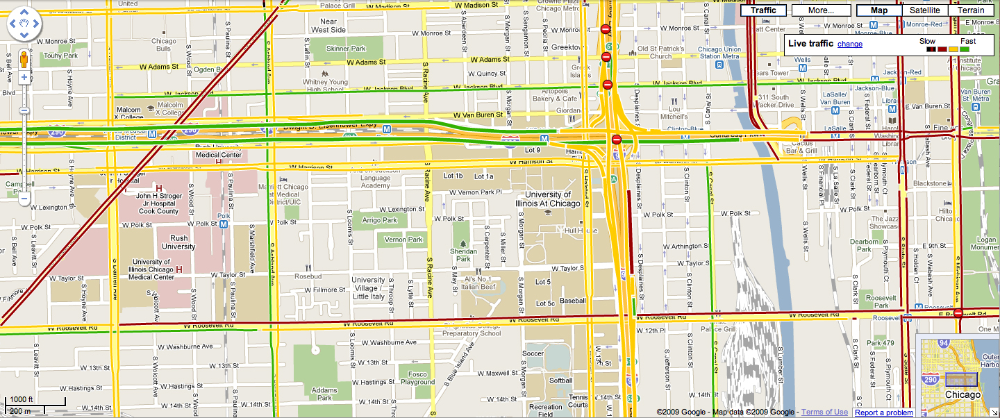
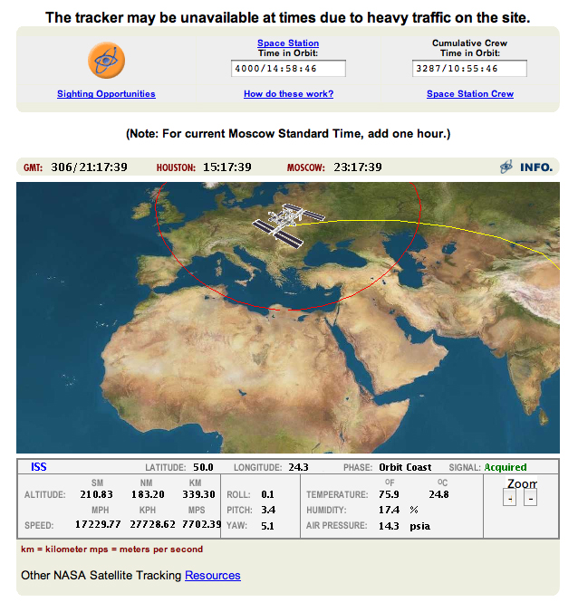
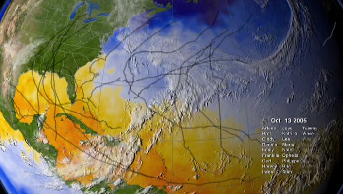

Week 12
Dynamic Data & Animation
Dynamic Data
The data
being analyzed may not be a static database - it may be a
constantly flowing stream of data that you are dipping into to
look at the current state at this instant.
There is a wide variety of data and tasks here:
- actively
assisting
/ routing
- an
air traffic controller
- monitoring
and looking for anomalies where you need to react quickly
- monitoring
the telemetry while launching a space shuttle
- tracking
various stocks, currencies, world events for a wall street
broker
- city
traffic management
- casually
keeping
track of the current situation
Importance of context
Often very
important not just knowing the current value (e.g. position,
price) of an entity, but also the recent values of that entity, to
show how it is changing (e.g. value increasing or decreasing,
moving N /
S / E / W, etc)
How do the characteristics and recent history of this entity
compare to other similar entities (airplanes, currencies, stocks,
etc) at the current time? Is there a larger pattern or is this one
an anomaly.
How do
the characteristics of the current data compare to the expected /
common / average / historical data?
- in
value, volume, diversity, density, location, direction,
content, etc
- e.g. is
that earthquake in a spot that we expect earthquakes in? is
that airplane following a typical flight path? do sales tend
to increase at this time of year?
- Is the
expected data explicitly shown or is that kept within the
individuals using the visualization
Google
Finance is a nice example - lets see how apple is doing: http://www.google.com/finance?q=NASDAQ:AAPL
and how they
compare to other tech companies and US stocks in general.
If you are
working in shifts then its very important to effectively hand off
control
to someone else (air traffic controllers, nurses.) What is the
current general situation? What are the points of interest that
someone should keep track of?
How
can the visualization draw the viewers attention to a new
important event? (from Schneiderman)
- intensity:
2
levels (normal and high intensity attention getting) -
remember human perception of intensities
- marking:
___, *, arrows, boxes
- size:
up to 4, larger attracting more attention
- color:
up to 4 standard colours with additional colours used
occasionally
- blinking:
(2-4
Hz) on off, inverse, or colour changes - use sparingly
- audio:
soft for regular / harsh to attract attention
- animation:
bouncing
/ wiggling / shaking
It can be
helpful to put these under user control so the user can set the
thresholds or manually label interesting entities.
If the alert is very important then the visualization should
continue trying to get the user's attention until he/she
acknowledges the event.
in
situ visualization
a nice paper on this topic is:
In-Situ Processing and Visualization for Ultrascale Simulations,
Kwan-Liu Ma, Chaoli Wang, Hongfeng Yu, Anna Tikhonova, Journal of
Physics: Conference Series 78 (2007)
As well as monitoring complex
systems in the 'real world' there is also a need to monitor what
is going on in high-performance simulations. Visualization
is usually done as a post-processing step once the simulation
has finished running. This is becoming less common today as
there is now a need to do visualization while the simulation is
running.Computer simulations take up a
tremendous amount of resources and time (days to weeks) and the
investigators don't want to waste them.
Simulations are now running at the peta scale with exa scale
machines on the drawing board - http://en.wikipedia.org/wiki/Supercomputer#Timeline_of_supercomputers
Often simulations are run in
emsembles with slight variations in the initial parameters to
see what the different results are. If one of these simulations
starts behaving incorrectly or goes out of bounds then it would
be better to end it quickly and devote the processors, storage,
etc to a set of parameters that may give a better result.
Scientists would also like to 'steer' these simulations to
particular points of interest while they are running. This means
we need to see what is happening as the simulation is running -
as Larry Smarr puts it 'the window in the oven.'
The ability for
simulations to generate data far exceeds our ability to store
that data, and storing data to disc can take a very long time.
Most of the data generated in high-performance simulations is
not stored, so you typically do not have the ability to look
back through the various time steps of the simulation - the data
for the current step is used to get to the next step and then it
is discarded.
One
approach to this is to stop the simulation at a given time step,
move the relevant data over to another cluster for
visualization, and then start the simulation running again. This
allows the creation of the visualization to run in parallel
(co-processing) with further computation. When the visualization
is finished then decisions can be made on whether to continue
the current simulation, refocus it by changing some parameters,
or end it. This is doable but there can be a lot of time spent
moving data between the clusters.
Another
approach (in situ visualization) is to share the processing
nodes and storage space on the same cluster with part of the
cluster devoted to computation and part devoted to
visualization. This is harder to code since the computation and
visualization need to make sure they don't step on each other's
data, and scientists often want to devote as much of the cluster
as possible to computation. To reduce data duplication and
movement the visualization code needs to accept the organization
of the data for the simulation, which may be less than ideal.
For this to work well the visualization software designers must
work closely with the simulation software designers. This also
means the visualization people need to make use of the resources
on the simulation machine which typically means software-based
rendering rather than hardware-accelerated rendering.
In both cases a major issue is the amount of data that needs to be
moved. Data reduction techniques may involve only visualizing
every n'th time step, visualizing all the data at a very course
resolution, reducing the dimensionality of the data to be
visualized, or focusing on a particular region of the simulation.
We
talked about weather data before, and similar data on air quality
is made available on an hourly basis.
Flight tracking software is a good
example of this - when I was collecting data for the O'Hare
project I grabbed the current data at regular intervals. There
is similar data for buses in Chicago , and many other types of
vehicles. This kind of data tends to be rather small though,
there may be many entities.
We looked at the Chicago traffic data in graphic form when talking
about uncertainty:
http://www.travelmidweststats.com/GCMLink.aspx?GCMLinkID=IL-TESTTSC-264
Similar charts can be useful when looking at things like
electricity demand and will likely become more ubiquitous as we
move to 'smarter' power grids:
http://www.caiso.com/outlook/SystemStatus.html
Back to Chicago traffic
We can also look at in a map form
and that form may be better to show recent accidents or lane
closures that explain why travel times have suddenly changed and
give more accuracy as to where those events may have occurred
(i.e. where the road turns from red to green.) Google maps and
other services also nicely update the colour of tracked road in
something close to real-time. Here are the traffic conditions
around UIC on Monday Nov 2nd at 3pm. In the future fixed sensors
communicating to a central server will likely be replaced by
auto to auto communication systems for more timely
communication.

Other sites allow you to track individual entities:
Exploratorium's Cab Tracker: http://cabspotting.org/client.html
The live tracking is no longer being updated but the movies are
still there
CTA Bus Tracker: http://www.ctabustracker.com/bustime/map/displaymap.jsp

and slower
things like whales: http://www.greenpeace.org/international/campaigns/oceans/whaling/great-whale-trail/map
which is no longer being updated.

or fast
things like the international space station - http://spaceflight.nasa.gov/realdata/tracking/index.html
or http://www.n2yo.com/?s=25544

Its pretty common for people to visualize the current state of
their computer (CPU, network, battery, temperature, etc.) In the
'old days' of the 70s and 80s you could listen to the hard drive
or the modem and know what the computer was doing. Today the
computer helps out.
on a bigger scale there are similar tools for the state of the
PlanetLab machines: http://codeen.cs.princeton.edu/covisualize/
or to look over the various optical networks that EVL can connect
to: http://starlsd.sl.startap.net/mrtg/e1200.html
back to the chaos
that is twitter:
http://trendsmap.com/ - this
one seems slow to update
digg labs -
http://labs.digg.com/ -
(link seems unresponsive) stack seems somewhat useful, swarm is
interesting but needs more resolution
current news:
msnbc specra - http://www.msnbc.msn.com/id/24207533/
- pretty but is it useful?
and news skimmer - http://www.msnbc.msn.com/id/24115502
- ditto
and we previously talked about news map http://newsmap.jp/
somewhat slower:
reasonably current national air quality data - http://airnow.gov/
and an example at the state level - http://www2.des.state.nh.us/airdata/
and http://www.maine.gov/dep/air/ozone/currentdata.html
realtime (within 5 minutes) earthquakes for the past 7 days on
Google earth
http://earthquake.usgs.gov/eqcenter/catalogs/
and a map version http://earthquake.usgs.gov/eqcenter/recenteqsww/
local 'weather' data in EVL: ftp://ftp.evl.uic.edu/pub/software/andy/evlTempF.html
internet traffic report: http://www.internettrafficreport.com/
on the financial side there is a
lot of work looking at the current state of the stock market and
currencies. In many cases these are purely algorithmic since
fractions of a second can be important in making those kinds of
trades, but people also use visualization to look for trends or
opportunities that the algorithms may have missed.
For example aqumin's AlphaVision: https://sites.google.com/a/aqumin.com/wiki/
Animations
Animations can be an end product of
an analysis, and it can also be used within a visualization and
analysis tool as we have seen in the class projects.
Animation allows us to look at the pace of change in the data
(velocity), and changes in that pace (acceleration.) In
visualizations with many entities it helps us follow the path of
individual entities rather than just seeing 'snapshots' of
static positions. In many cases the original phenomena being
studied was continuous but was discretized when it was sampled /
measured so animation can bring us back to a more 'natural'
representation of the information. One must be careful that any
interpolation done for an animation remains true to the original
data.
In terms of
the lie factor, here you need to be careful of how time appears
to progress. You should have an indication of the current time,
and you should not change the speed that time passes or cut out
sections of time without informing the viewer in an obvious way.
A nice
application showing global statistics over time
http://www.gapminder.org/
There is a nice 20 minute 2006 TED talk about it here: http://www.ted.com/talks/hans_rosling_shows_the_best_stats_you_ve_ever_seen.html
and there are several more video talks with Hans Rosling that are
worth watching as well, one shorter more recent one is http://www.youtube.com/watch?v=jbkSRLYSojo
Some nice examples:
CodeSwarm out of UC Davis - http://vimeo.com/3914346
and an example with twitter - http://vimeo.com/9225227
similar
to
the data from the O'Hare project, here are
airplane flight patterns across the US - http://youtube.com/watch?v=dPv8psZsvIU
and worldwide http://www.youtube.com/watch?v=1XBwjQsOEeg
more data
is available here: http://www.aaronkoblin.com/work/flightpatterns/
an
interesting ad: http://flowingdata.com/2009/07/29/animated-infographics-for-the-eat-local-eat-real-campaign/
Here is a flash visualization of the Chicago Fire of 1871
http://www.pbs.org/wgbh/amex/chicago/maps/pop_fire_body.html
NASA
Goddard
Space Flight Center makes some very nice high resolution
animations:
http://svs.gsfc.nasa.gov/
including the 2005 hurricane season animation - 27
storms
http://svs.gsfc.nasa.gov/vis/a000000/a003300/a003354/index.html

Coming Next Time
Visual Analytics
last
revision 11/12/12